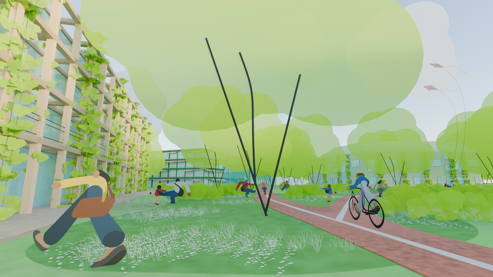
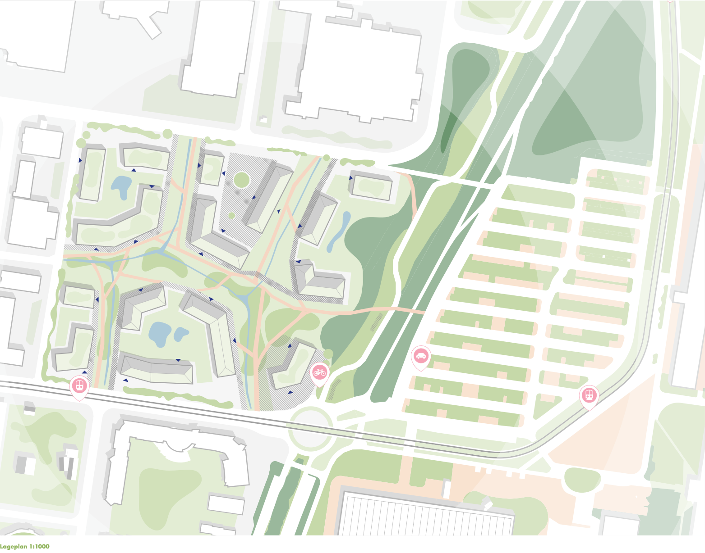
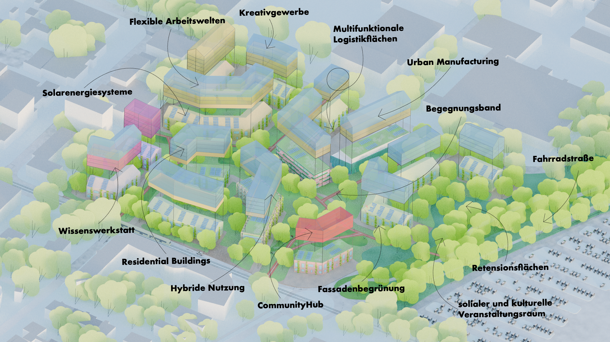
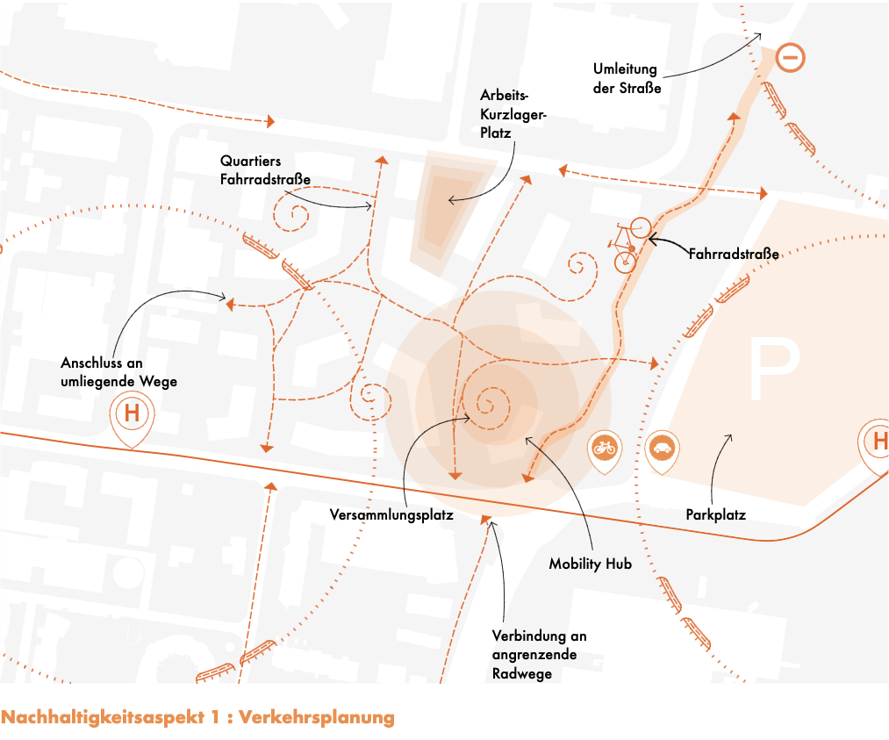
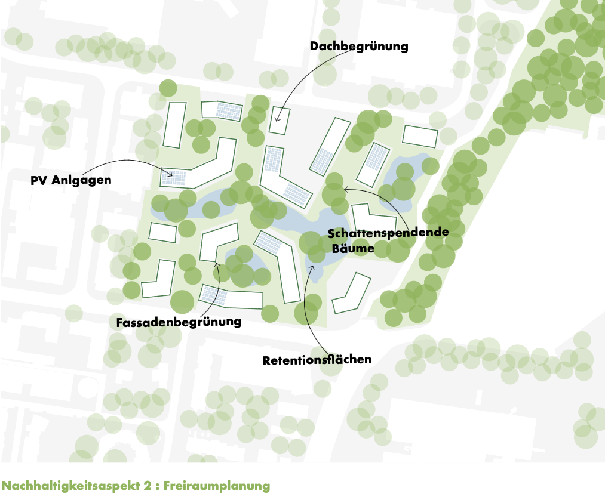
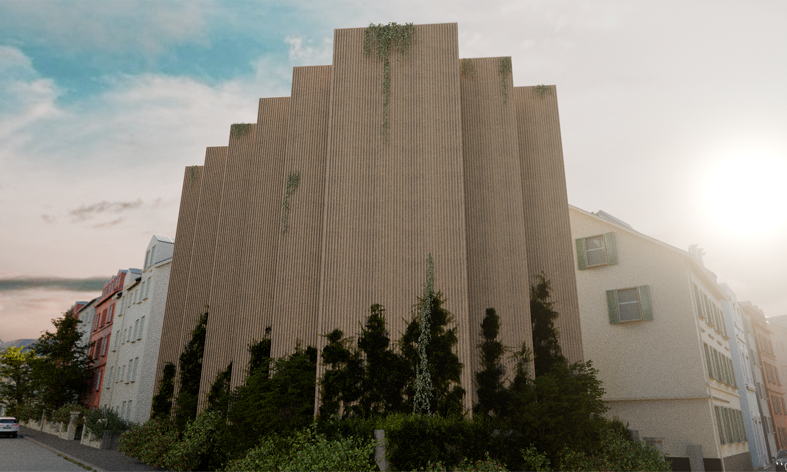
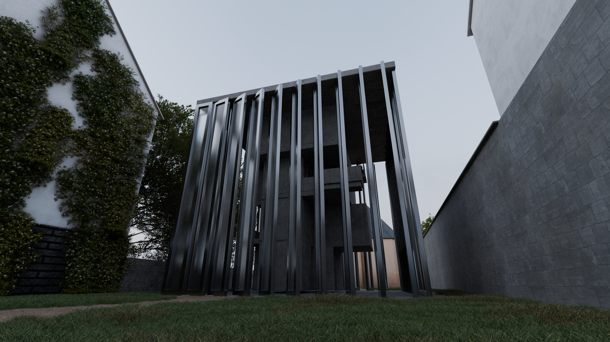
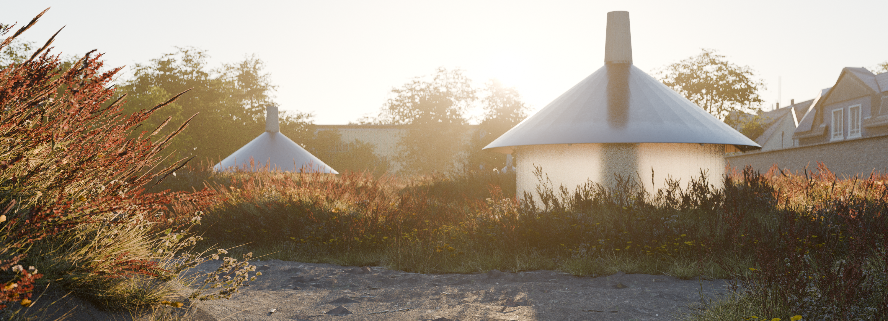

VERNÄHT

The design conceives the Messplatz as an urban interface between industry, education, housing and leisure. Rather than separating these uses from one another, their distinct identities are interwoven. Six open, perforated building blocks form a permeable structure in which work, housing, education and urban production come into direct contact with one another. The commercial dynamism of the existing northern development is channelled into the neighbourhood, whilst the green space of the Bürgerpark extends from the east into the new structure.
The open spaces serve not only a connecting function but also a climatic one. The neighbourhood follows the principle of the ‘sponge city’: unsealed green spaces, water channels and ponds absorb rainfall, store it on site and release water back into the environment through evaporation. The open block structures promote ventilation and reduce the formation of heat islands. Retention roofs and photovoltaic systems complement the system on the buildings.
Another change concerns mobility. The road beneath the eastern bridge will be closed to traffic and converted into a cycle route. The space thus freed up will be unpaved and repurposed as a multifunctional green space. This will create a continuous public space between Messplatz and Bürgerpark for people to linger, meet and hold events. A central mobility hub will bring together the neighbourhood’s transport options.
This will not only weave together the built environment but the entire urban system: land uses, open spaces, water and mobility intertwine to create a climate-adapted neighbourhood that does not isolate itself from its surroundings but remains connected to them.





RELATED PROJECTS
4. Semester
STADTGARTEN
Details
STADTGARTEN
Details

2. Semester
KLANGKÖRPER
Details
KLANGKÖRPER
Details

5. Semester
TEEGARTEN
Details
TEEGARTEN
Details
